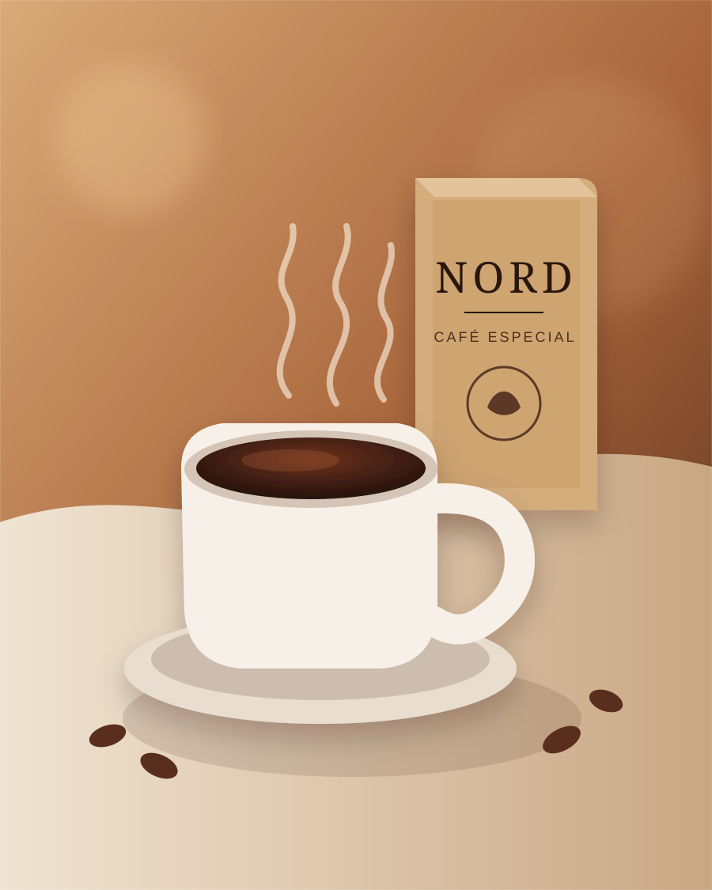

Torra Clara
Delicada, aromática e leve. Para quem gosta de perceber cada nuance.
SuaveCAFÉ ESPECIAL • PEQUENOS LOTES
Uma experiência feita para quem aprecia aroma, cuidado e tempo. Escolha sua torra e descubra um novo ritual para todos os dias.

ESCOLHA SEU PERFIL
Do perfil mais delicado ao mais intenso, cada torra oferece uma experiência diferente sem perder a identidade NORD.
Delicada, aromática e leve. Para quem gosta de perceber cada nuance.
SuaveEquilibrada e versátil. Uma escolha fácil para diferentes métodos.
EquilíbrioEncorpada e marcante. Para quem prefere presença e final prolongado.
IntensidadeA EXPERIÊNCIA NORD
A NORD foi pensada para transformar uma pausa comum em um momento de atenção. Café bem apresentado, torra cuidadosa e uma experiência visual simples, quente e contemporânea.
PRONTO PARA DESCOBRIR?